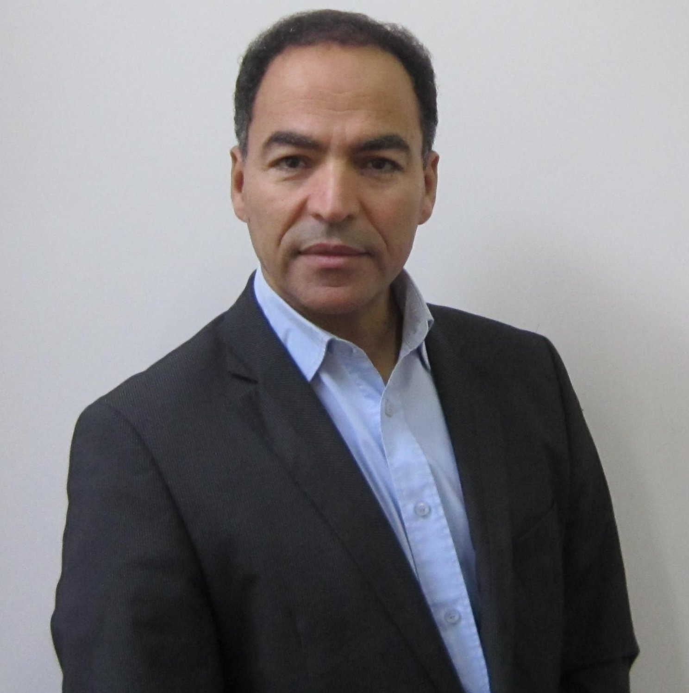

Aziz Alaoui's home page
------- 1988 ------------------ 1999 --------------- 2007---------------------- 2011-------------
Professeur à l'université du Havre, France
Actuellement, Vice-président de l'université du Havre (conseil scientifique : recherche, valorisation et études doctorales)
Domaine de recherche (Mathématiques Appliquées, 26eme section du CNU) :
Systèmes Dynamiques Dissipatifs Réels, Dynamique Non Linéaire,
Chaos et Applications.
Dynamique des populations et Eco- ou Bio-Mathématique.
Systèmes Complexes.
Bref Curriculum Vitae
Divers organisations scientifiques et animation :
- co-Editeur en chef pour la revue internationale (JNSA), depuis janvier 2010
- Editeur associé pour la revue internationale (IJBC), de 1-1-2012 à 1-1-2014
- Guest Editeur associé pour la revue internationale (IJBC), de 1-1-2010 à 1-1-2012
- Editeur associé pour la revue internationale
(DCDIS-B) de 2005 à 2011
- Editeur associé de
Arab Journal of Mathematics and Mathematical
Sciences (AJMMS) depuis 2007
- ex Editeur régional de
Journal of Applied Sciences
(JAS), 2005-2008
- Editeur régional de
Asian Journal of Mathematics and Statistics
(AJMS), 2005-2008
-
- PES septembre 2010 - septembre 2014
- PEDR septembre 2006 - septembre 2010
- PEDR septembre 2001 - septembre 2005
-
- Expert pour l'ANR
- Expert pour la NSF
- Reviewer pour divers Journaux scientifiques
(Journal Math. Analysis and appli, Theor.Pop.Bio, IJBC, DCDIS, DCDSb, MCM,
CNSNS, IIJSS, NonLinear Dynamics, Chaos.S.F,
IEEE TCAS-II, IEEE Communications Letters,
Physica A,D, Phy.L.A, ...)
- (Co-)organisateur de quelques colloques ou conférences
voir ce que j'ai (co-)organisé
ou que je (co-)organise
- Membre du comité scientifique ou du comité de programme
de diverses conférences nationales ou internationales
- membre du GdR "Dynamique et Contrôle d'Ensembles Complexes",
DYCOEC : GDR n° 2489, CNRS.
- Récentes invitations :
- un mois au Nonlinear Complex Systems Center, Wuhan (WTU), Chine, Octobre 2011
- un mois au laboratoire de maths de Waterloo Ontario Canada, juillet 2010
- deux semaines à l'Ecole polytechnoique, Tunis, mai 2009, novembre 2009, novembre 2010
(Enseignant dans le Master d'Ingénierie Mathématique de l'Ecole Polytechnique de Tunisie entre 2008 et 2010)
- une semaine à Mostaganem, mai 2008
- un mois à City university
of Honk Kong (20 avril - 20 mai 2007, Research Fellow),
- deux semaines à Shandong University
Chine, juin 2007
- ...
- un mois à college Park, Maryland, USA, invité par C. Grebogi
"Chaos groupe"
- Récents seminaires invité:
- "Systèmes complexes, Réseaux d'interactions de neurones et synchronization", Wuhan (WTU), Chine, Octobre 2011
- "Dynamique diffusive et travelling-waves pour des modèles de prédateurs-proies", Wuhan (HUST), Chine, Octobre 2011
-
"Synchronisation, complexité et émergence dans des problèmes en neuroscience",
LIPN, Université Paris 13, Villetaneuse, France, 08 juillet 2011
- "Dynamique de modèles proie-prédateur avec diffusion",
Conférence pleinière,
troisième journée de la Fédération de Recherche Normandie-Mathématiques
LeHavre, 9 juin 2011.
- "Complexité, synchronisation et dynamique de réseaux d'interaction de modèles neuronaux",
Ecole polytechnique de Tunis,
novembre 2010
- "Predator-Prey Dynamics", Ecole polytechnique de Tunis,
Mai 2009.
- "Travelling wave solutions for a class of Predator-Prey models",
seminaire à la memoire de L. Forest, INSA de Rouen, juin 2009
- "Predator-Prey Dynamics", conférence plénière au 3ème Workshop E.D.A. - E.D.O
May 24-29, 2008, Mostaganem.
- "Self Organization and Emergent Properties in Natural and
Artificial Complex Systems", Plenary talk in
The 2nd International Conference on Complex Systems and Applications
--Modeling, Control & Simulationns
June 8-10, 2007, Jinan, China.
-
"Delay and Partial Differential Equations in Species Dynamics"
Seminary at : Polytechnic University of Hong Kong,
May 04, 2007.
- Ordinary, Delay and Partial Differential Equations
in predator-prey dynamics (Modeling, Stability, Bifurcations and Chaos)
Seminar at :
Academy of Mathematics and Systems Science, Chinese Academy of Sciences
May 24, 2007.
- "Complex Emergent Properties and Chaos (de-)synchronization",
1eres journnées Scientifiques Euro-mediteranéenes,
Seminaire en l'honneur du Prof L.O. Chua, mis docteur Honoris Causae
Toulon, 15 septembre 2006.
- "Chaos, Attracteurs Etranges et Synchronisation"
Strasbourg, juin 2005, au LSIIT
UMR-7005.
- ...
Formation :
Université de formation : Nice - Sophia-Antipolis.
Doctorat de mathématiques de l'Université de
Nice-S-A,
(aussi bien que le DEA, Maîtrise, licence et 1er cycle)
HDR : (Habilitation à Diriger des Recherches) en mathématiques
soutenu au Havre
janvier 2001.
Actuellement : Professeur de Mathématiques à l'université du
Havre.
Occupations jusqu'à maintenant : Recherche et enseignement en
Mathématiques:
Systèmes dynamiques, Equations différentielles,
Chaos, Bifurcations, modélisation,
dynamique non linéaire (attracteurs étranges, synchronisation du chaos,
dynamique des populations, ...) et systemes complexes.
Coordonnées
Nom de famille, AZIZ-ALAOUI. prénoms, M. A.
Né au Maroc,
Adresse Complete, travail:
Université de Le Havre,
Lab. Math. Aplli., FR-CNRS-3335
25 rue Philippe Lebon,
BP 540,
76058, Le Havre, Cedex, France
Tel.: (+33) (0)2 35 21 72 13
Fax: (+33) (0)2 32 74 43 14
E-mail: aziz.alaoui@univ-lehavre.fr (( ou aziz.alaoui1@gmail.com ))
page-web :
http://lmah.univ-lehavre.fr/alaoui/
Activitiés de Recherche
Mes activitiés de recherche en mathématiques
(systèmes dynamiques dissipatifs réels)
incluent :
- Bornage et stabilité des solutions d'équations différentielles
- Bifurcations conduisant à des comportements chaotiques
- Systèmes dynamiques chaotiques
- Applications chaotiques du plan
- Attracteurs étranges
- Synchronisation du chaos
- Modèles Proies-Prédateurs (E.D.O, E.D.Retard, E.D.P) :
mes centres d'intérêt en recherche s'orientent depuis quelques années
vers l'application de la théorie des systèmes dynamiques (dynamique non linéaire, stabilité,
bifurcations, chaos, ...) à des problèmes issus du vivant, biologie,
écologie, théoriquement et numériquement ... .
- Systèmes complexes : je m'intéresse de plus en plus
aux systèmes COMPLEXES, réseaux d'intéraction, emergence et auto-organisation.
Voir PUBLICATIONS
Jurys et rapports de thèses ou HDR :
Jury et/ou rapporteur pour quelques thèses de doctorat ou HDR:
- B. Tsanou, -Rapporteur-, (Metz, INRIA, le 13 janvier 2012)
- C. Vandermoere, -Rapporteur-, (Lille-I, le 15 décembre 2011)
- D. Moulay, (Le Havre le 26 septembre 2011)
- R. Yamapi (HDR, Le Havre, novembre 2010)
- A. Fulgence Nindjin, (HDR, Abidjan, janvier 2009)
- N. Corson N. (décembre 2009, Le Havre)
- B.A. Camara (juillet 2009, Le Havre)
- H. Sidibé (octobre 2009, Le Havre)
- R. Ghnemat R. (juin 2009, Le Havre)
- J.M. Ginoux J.M. (HDR, rapporteur et jury, Toulon, juin 2008)
- O. Belhamiti (26 mai 2008, Mostaganem)
- A. Vidal (02 juillet 2007, Paris VI)
- F. ElAdnani de (HDR, rapporteur et jury, ElJadida, juin. 2007)
- E. Cherrier, -membre invité- (26 octobre 2006, Nancy)
- Braham Pal Singh, -Raporteur- (septembre 2006, India)
- S. Maingot, (HDR, 31 mai 2006, Le Havre)
- J.M. Ginoux, -Rapporteur- (28 novembre 2005, Toulon)
- M. Ouriemchi (09 décembre 2005, Le Havre)
- R. Yafia, -Rapporteur- (15 Janvier 2005, ElJadida, Maroc)
- S. Deriviere, (Décembre 2004, Rouen)
- M. Daher, (Décembre 2004, Le Havre)
- R.K. Naji, -rapporteur- (Avril 2003, India)
- A. Elhaial, (juin 2000, Le Havre)
- ...
Rapporteur sur quelques thèses de doctorat ou HdR.
- J.M. Ginoux J.M. (HDR, rapporteur et jury, Toulon, juin 2008)
- F. ElAdnani de (HDR, rapporteur et jury, ElJadida, juin 2007)
-
Braham Pal Singh, -Report- (september 2006, India) "Dynamical Behavior of Non-Linear Models in Ecological Systems", Departement of Maths, Indian Inst. of Technology Roorke, India
- R. Yafia, Janvier 2005,
"Contribution à l'étude de la Bifurcation de Hopf dans
le cadre des équations différentielles à
retard, Application à un problème en dynamique de population"
Lab. math Univ. ElJadia Maroc
- J.M. Ginoux, 28 novembre 2005,
"Stabilité des systèmes dynamiques
chaotiques et variétés singulières", Toulon.
- R.K. Naji, Avril 2003,
"Order and Chaos in Multispecies Ecological Systems"
Depart. Math. Indian Institute of technology ROORKE - INDIA
- ...
-
Encadrement, (Doctorants, Master recherche, ...)
Voir aussi Encadrement
-
Doctorat :
-
Encadrement de la thèse de Moulay D., début octobre 2007,
Sujet : Modélisation et analyse mathématique de problèmes en epidémiologie
(EDO, métapopulation et réseaux, ED à retard, contrôle), cas du chikungunya.
(financement : allocation régionale).
Soutenue au Havre le 26 septembre 2011.
-
Encadrement de la thèse d'état (HdR Côte d'Ivoire) de Nindjin A.F.
(Financement : soutien de l'Unesco et de l'EGIDE pour les visites au Havre).
Sujet : Analyse de systèmes
dynamiques à retard modélisant des problèmes de dynamique des populations.
Soutenue à Abidjan le 15 janvier 2010.
Pour plus de détails, voir N.A.F
-
Encadrement de l'HdR de Yamapi René
Sujet : Contribution à l'étude des phénomènes non-linéaires: Applications aux
systèmes électromécaniques et biologiques,
Soutenue au Havre le 06 novembre 2010.
Pour plus de détails, voir R.Y.
-
Encadrement de la thèse de Corson N., début Septembre 2006,
Sujet : Etude de modèles en neurophysiologie, systèmes dynamiques et synchronisation.
(financement : allocation du ministère).
Soutenue au Havre le 02 décembre 2009
-
Encadrement de la thèse de Camara B. A. début novembre 2005.
(Financement : bourse Sénégal).
Sujet: Sur des problèmes modèmes proie-prédateur, avec diffusion, et applications.
Soutenue au Havre le 03 juillet 2009.
-
Encadrement de la thèse de Derivière S. Soutenue le 13 Décembre 2004,
(Financement : allocation du ministère).
Sujet: Contribution à l'étude des attracteurs des systèmes dynamiques en
dimension finie.
- Qualifiée en 26ème et en 25ème sections du CNU.
- S.D. est ATER à l'univ. Rouen 2004-2005, actuellement
Post-Doc au Canada.
Pour plus de détails, voir D.S.
-
Encadrement de la thèse de Daher O. M. Soutenue le 14 Décembre 2004,
(Financement : bourse de la coopération Française - EGIDE).
Sujet: Etude et Analyse Asymptotique de Certains Systèmes Dynamiques
Non-Linéaires : Application à des Systèmes Proie(s)-prédateur(s).
- Qualifiée en 26ème section du CNU.
- Actuellement M.D.O. est Ens-Chercheur à Djibouti.
Pour plus de détails, voir D.O.M
-
Encadrement de la thèse de Deai H. début Décembre 2004.
(Financement : bourse étrangère).
Sujet: Sur des problèmes différentiels non réguliers du type Filippov.
Application à des Systèmes Proie(s)-prédateur(s).
-
Co-encadrement de quelques doctorants et participation
à quelques jurys, voir Encadrement.
-
Rapporteur sur quelques thèses de doctorat, voir Encadrement.
-
DEA de mathématiques (= Master 2 recherche):
j'ai encadré quelques étudiants de master recherche (DEA) :
-
Moulay D., janvier - juillet 2007, (Master rechrecher MIASC
(Math-Info Appl. Syst.complexes du Havre))
` "Modélisation et Dynamique du Chikungunya'.
-
Corson N., janvier - septembre 2006, (Master rechrecher MIASC
(Math-Info Appl. Syst.complexes du Havre))
` "Bursting" neuronal, systèmes dynamiques et synchronisation'.
- Camara B., Janvier-septembre 2005,
(Master rechrecher MIASC, Math-Info Appl. Syst. Complexes du Havre)
`Bifurcations et chaos pour certains systèmes complexes en écologie'.
- Li Qiang.,
Janvier-septembre 2005, (Master rechrecher MIASC)
(co-encadrement avec un collègue informaticien),
`Modélisation d'organismes dynamiques émergentes dans des écosystèmes'.
-
Saint-Pol Y., mars 2004-juillet 2004,
`Exposants de Lyapunov et synchronisation du chaos'.
-
Bass P., mars 2004-juillet 2004,
`Bifurcations, théorème de Shilnikov et solutions homoclines'.
- Elamri J., mars-juillet 2003 (co-encadrement avec un collègue Informaticien), sur la
`synchronisation du chaos (intersection de polygones) et application à la sécurité de communication'.
-
Derivière S., nov. 2000-juillet 2001,
`Principe d'invariance uniforme et synchronisation des systèmes différentiels
chaotiques'.
-
Daher O.M., avril-septembre 2000,
sur `l'étude de la stabilté globale des solutions de quelques systèmes
différentiels de IR^3, modélisant des problèmes en dynamique des populations'.
- Seguin S., avril-septembre 1998, sur la
`reconstruction des orbites d'un système dynamique discret'.
- ...
-
DESS d'ingénierie mathématique AIMAF (= Master 2 Professionnel) :
Tuteur de quelques étudiants de dette formation, un à deux par an.
-
Ingénieurs: Rapporteur sur des travaux de fin d'étude
d'élèves ingénieurs,
et participation aux jurys, par exemple à l'ENTPE de Lyon,
-
juin 1999, Y. Zahir, `Caractérisation des vibrations non périodiques
d'un système dynamique',
- juin 2000, G. Veylon, `Chaos minimal dans les systèmes différentils
dissipatifs contenant une non-linéarité cubique'.
-
En maîtrise de mathématiques : chaque année je
propose plusieurs sujets de mémoire de
maîtrise (par exemple 5 en 98-99 ou 2 en 99-2000) et j'assure
l'encadrement des étudiants. Exemples :
-
Février à juin 2007 : Théorème de Tikhonov et système neuronal
de Hindmarsh-Rose
-
Février à juin 2006 : Etude du système différentiel de Hindmarsh-Rose
-
Février à juin 2006 : Modeles EDO (ou EDP) sur le Cancer,
vu comme un problème proie-predateur
-
Février à juin 2006 : Bifurcations et dynamique complexe du système de Chen
-
Février à juin 2005 : Orbites homoclines et théorème de Shilnikov
-
Février à juin 2005 : Systèmes Différentielles à second membre discontinus : Inclusions
Différentielles
-
Février à juin 2004 : Modélisation et étude d'un modèle SIR de propagation de virus
-
2 sujets en 2003 :
Février à juin 2003 :
sujet 1: Calcul des exposants de Lyapunov pour les systèmes dynamiques de type Fillipov.
Sujet 2: Calcul des diagrammes de Bifurcation pour les systèmes dynamiques de type Fillipov.
-
un sujet en 2002,
-
deux sujets en 2001,
-
Février à juin 2000 : sujet 1: Systèmes Dynamiques Discrets, Chaos et
Bifurcations, ...,
-
Février à juin 1999:
sujet-1: étude du chaos dans un système écologique;
sujet-2: étude numérique du système de Waleff;
sujet-3: Méthode des petites pérturbations en EDO et applications; ...
-
etc ...
-
En 1er cycle univ. : différents encadrements de stages et
projets en DEUG (méthodes numériques) ou en 2ème année d'IUT (par exemple sur
'une interface graphique en langage 'C', sous DOS, orientée utilisateur' ;
puis sur
'une interface graphique en langage 'C', sous UNIX' ...)
Coopérations nationales ou internationales actuelles :
 WUHAN,
with Prof. J. Liu et al , Center NonLinear systems and Complex Networks,
WTU, Wuhan, China.
WUHAN,
with Prof. J. Liu et al , Center NonLinear systems and Complex Networks,
WTU, Wuhan, China.
HONG KONG ,
with Prof. G. Chen, Center for Chaos Complex and Networks,
City University of Hong Kong.
BEIJING,
Institute of Systems Science Academy of Mathematics
and Systems Science Chinese Academy of Sciences, Beijing, China
WATERLOO-ONTARIO-CANADA,
Department of Applied Mathematics,
Faculty of Mathematics
University of Waterloo,
Canada
KIEV,
National Academy of Sciences, Inst. maths., Kiev,
Ukraine.
MARYLAND,
Chaos groupe of College Park,
University of Maryland, USA.
SAN ANTONIO,
Trinity, university, Texas, San-Antonio, USA
DOUALA,
Mathematical Physics
Department,
Faculty of Sciences
University of Douala,
Cameroon
ABIDJAN,
Mathematical
Department,
Faculty of Sciences
University of Abidjan,
Ivory-Costa
Ecological complexity,
University of California, Riverside, USA.
With Pr. Larry Li
Nice-S-A , Labo. Math., Université de Nice, France.
Rouen , Labo. CORIA, Université ode Rouen, France.
Lyon, ENTPE, Labo. syst. dyn. France.
Organisations Scientifiques et Animation:
Editeur associé de la revue internationale IJBC
Editeur associé de la revue internationale DCDIS-b
Editeur associé de la revue internationale AJMMS
Editeur Régional de Journal of Applied Sciences
Editeur Régional de Asian Journal of Mathematics and Statistics
Reviewer pour plusieurs journaux scientifiques
Co-organisateur de quelques colloques sur le Chaos, voir par exemple :
"Emergent Properties in Natural and Artificial Complex Systems",
(EPNACS'07),
EPNACS 2007
membre du comité scientifique de quelques conférences nationales
ou internationales
Membre de la SMAI : Société de Mathématiques Appliquées
et Industrielles
Membre de la SIAM : Society for Industrial and Applied
Mathematics
Membre associé de certains centres de Syst. Dyn.
Plusieurs séminaires locaux ou non, écoles, ...
voir Séminaires
et la partie conférences dans
Confs.
Activitiés d'enseignement
(entre 1988 et maintenant j'ai assuré un ou plusieurs des cours suivants)
3ème cycle:
-
Coordinateur et co-respondable du master Math-Info de l'univ. du Havre
(contenant 3 parcours
de Master 1 + 3 parcours de master 2)
- Responsable pédagogique du master recherche MIASC voir
ici
- J'enseigne la moitié du tronc commun
"modélisation mathématique des systèmes complexes, du master recherche MIASC
- J'enseigne l'option "dynamique non linéaire"
de ce même master.
- Méthodes numériques pour le calcul actuariel,
Master2 Professionnel AIMAF (ex DESS Ingénierie mathématique en finance et Assurance)
- Méthodes numériques pour la finance, Master2 Professionnel AIMAF
(ex DESS Ingénierie mathématique en finance et Assurance)
2nd cycle:
- Equations Différentielles, Maîtrise de mathématiques
- Analyse numérique matricielle, Maîtrise de mathématiques
- Analyse numérique, Licence de mathématiques
- Optimisation, Licence d'économie (en 1989-90)
1er cycle:
- Méthodes numériques
- Analyse
- Algèbre
- Informatique, Pascal et language C
- Probabilité et Statistique
- Algorithmique
- Analyse en IUT 1 et IUT 2 (dept : GEII).
Prépublications pédagogiques, voir
publications
Activitiés Administratives
Vice-Président de l'Université du Havre,
chargé du conseil scientifique et de la Recherche, depuis janvier 2007
Vice-Doyen (=directeur adjoint) del'UFR-ST
chargé de la Recherche.
de Décembre 1994 à Décembre 1998,
Je fus l'un des deux vice-doyens de la Faculté des Sciences du Havre ;
l'autre est chargé de la pédagogie.
Porteur du projet du master Mathématiques-Informatique de l'université du Havre.
Responsable du Master 2 recherche MIASC -ex DEA-
(Math-Info Applications aux Systèmes Complexes)
Coordinateur de la `Maîtrise de mathématiques'.
de décembre 1994 à septembre 2000, j'ai monté le dossier de
cette filière durant l'année 93-94, 1ere ouverture en septembre 1994.
Conseils de l'Université :
- Membre élu du conseil scientifique, depuis Décembre 2006
- Membre élu du conseil scientifique, Décembre 2002 - décembre 2006
- Membre élu du conseil d'administration, Décembre 1998- Décembre 2002.
- Membre élu du conseil scientifique, Décembre 1994 - Décembre 1998.
- Membre nommé du Service des relations internationales
(SRI) de l'Université 1994-98.
- Membre de la commission finances de l'université, 2000-2002.
- Membre de la commission disciplinaire de l'université, 2000-2002.
Conseils et commissions (UFR-ST = Faculté des Sciences et Techniques du
Havre) :
- Membre du Départment de Mathématiques de l'UFR-ST, 1990 - ...
- Membre élu du conseil de gestion de la UFR-ST, Décembre 1994 - septembre 2002.
- Membre élu des commissions de spécialistes de Mathématiques du Havre
(25e et 26e sections du cnu), 1992 - 2002 , puis depuis décembre 2004
et VP prof de cette commission.
- Membre extérieur de la commission de spécialistes de Mathématiques de
l'INSA de Rouen (26e section du cnu), 1997-2002.
- Membre de la commissions de spécialistes d'informatique de l'UFR-ST
(27e section du cnu), 1997-98, et membre suppléant depuis décembre 2004.
- Membre de la commission informatique de l'UFR-ST,
1991-1999.
 Animated view of an attractor
Animated view of an attractor
Multi-attractors
demonstration (Gallery of multi-spiral strange attractors)
Multi-folds attractors
(Gallery of multi-folds Strange attractors)
 Back to server home page
Back to server home page